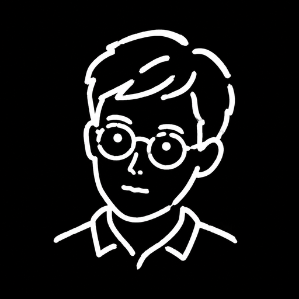

关于我
我是朱光森。
在现场，也在记录。
从 2023 年起，我在中国农业大学就业创业办公室负责创业工作。作为“种·未来”创客空间负责人，我参与项目判断、创业咨询、赛事培育、入孵陪跑与基金过程管理。
工作让我有机会接近一个想法开始生长的过程：团队遇到了什么问题，为什么选择这条路，得到反馈后又怎样调整。这里会收录我的工作，也会留下创业者和团队自己的讲述。
我目前也在中国农业大学食品科学与营养工程学院攻读博士。工作之外，喜欢电影、摄影、徒步、写作、模型制作和单簧管。

这句寄语
As Above So Below
对我而言，它连接着内心与外部世界：我带着自己的问题走进现场，也在倾听他人时，重新理解自己。
创业工作让我关注想法如何成为现实，记录则让我看见其中的选择、犹豫与变化。
寄语的出处
这句话与赫尔墨斯传统《翠玉录》中“上者如下者、下者如上者”的对应观念有关。牛顿留下过这部文本的译稿，但这并不使它成为科学定律。这里用它表达内心与外部世界的相互映照；上面的文字是我的个人化解读，不是原文直译。
查看《翠玉录》译稿转录（新窗口）一路走来的几个坐标。
中国农业大学就业创业办公室
负责创业工作，参与创业指导、项目培育、孵化运营与基金过程管理。
中国农业大学博士研究生
食品科学与营养工程学院，生物医药方向。
中国农业大学本科
食品生物工程。
保持联系
从一次聊天开始。
欢迎交流创业项目、创客空间与人物故事。如果你身边有一个值得认真听见的人，也欢迎说给我听。